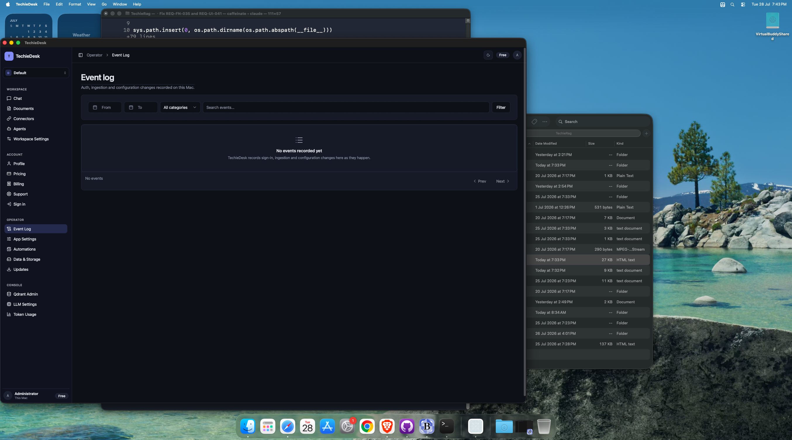
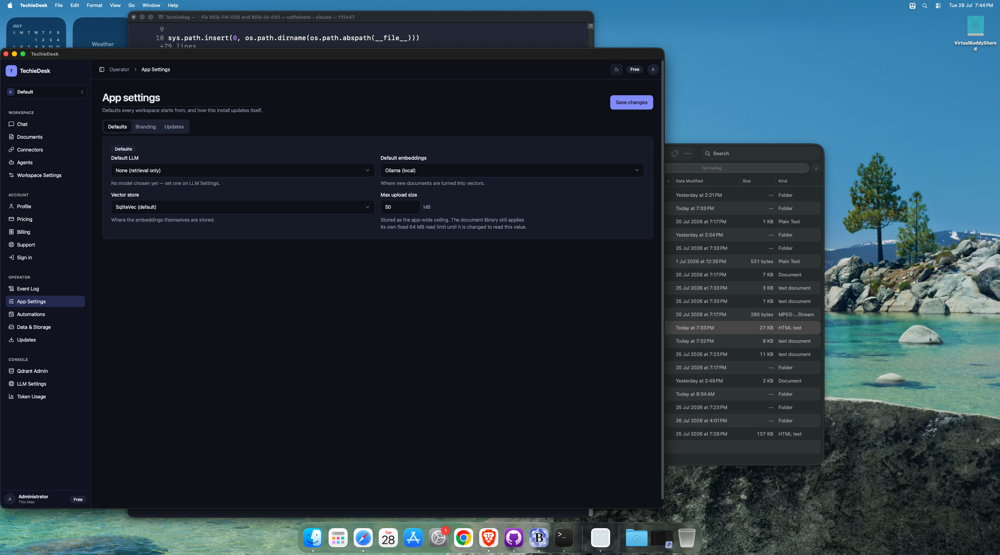
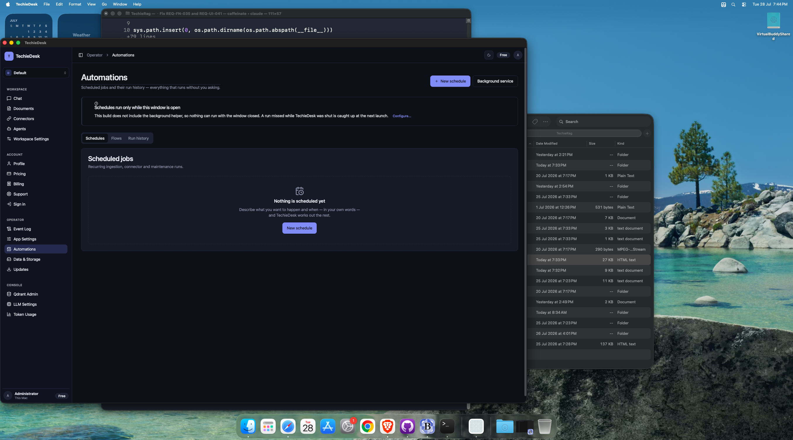
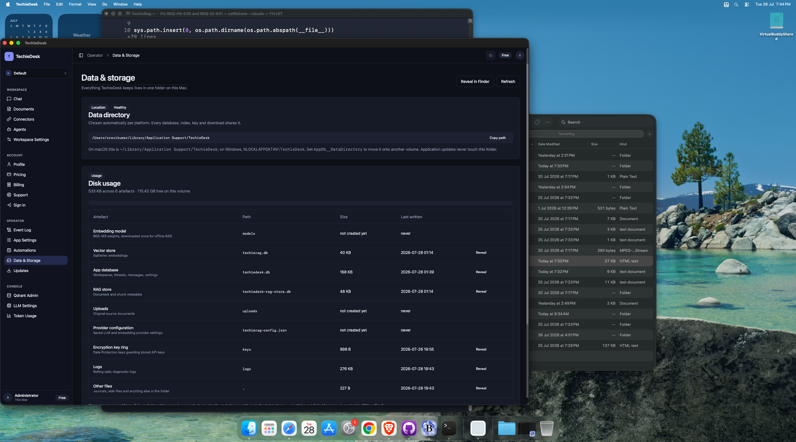
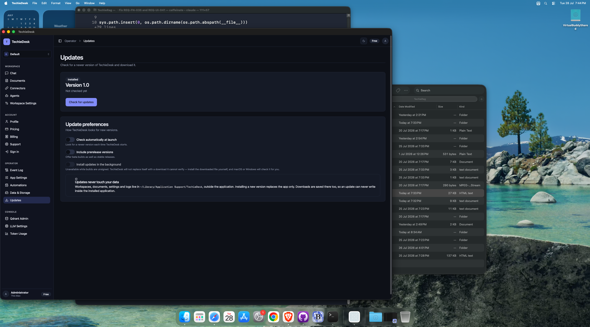

TechieDesk DevGuide — Operator
Generated 2026-07-28 · reflects code as built. ← index
✅ Runtime-verified 2026-07-29 — re-swept on the live Mac Catalyst head over Appium (
mac2), bound byappPathto the universal Release bundle, driving 28 of the 30 screens at 1600×1240 and 1024×720 (the REQ-UI-041 floor). EveryObservedline below is what the running app did;Visual (§4b)is the overlap / zero-size / off-viewport geometry check plus a human look at the screenshot. Screens that could not be reached say so and are not claimed as verified. Screenshots:test-results/ui-verify/.
5 screen(s) in this area.
/admin/events — AdminEvents#
- File:
apps/TechieDesk/Components/Pages/AdminEvents.razor(487 lines) - Reached via: Sidebar → OPERATOR → Event Log
- Observed: renders ✓ (runtime-confirmed 2026-07-29) — proven with real data. The screen was empty on arrival (the
EventLogtable held 0 rows), so a real config change was made on/admin/settingsand saved; the row then rendered with every column populated (Time / CategoryConfiguration/ Actoryou/ Event / Sourceadmin:settings), the header count1 events · configurationmatchedShowing 1–1 of 1, and the Details Dialog rendered its Summary / Raw record / Related events tabs with the correlation id. - Visual (§4b): looks-right ✓ (runtime-confirmed 2026-07-29) — 1600 and 1024: 0 overlaps, 0 zero-size, dialog centred.
- Known issues (2026-07-29): ⚠ Coverage gap (not a render defect).
IEventLogRepositoryhas exactly one producer —AppSettingsChangeLog, driven only by the/admin/settingssave. The screen's own subtitle and REQ-UI-026 both promise “auth, ingestion and configuration changes”, yet 12 ingested documents and 5 connector runs on this install produced zero events. Auth and ingestion have no writer at all.

Controls#
| Component | Uses | Razor line(s) |
|---|---|---|
<Button> | 6 | 61, 93, 163, 167… |
<Badge> | 3 | 81, 144, 225 |
<Alert> | 2 | 34, 35 |
<LucideIcon> | 2 | 35, 105 |
<Card> | 2 | 42, 66 |
<DataTable> | 2 | 68, 214 |
<Select> | 1 | 46 |
<Input> | 1 | 59 |
<Dialog> | 1 | 125 |
<Tabs> | 1 | 134 |
Data lineage — Razor → injected service#
| Call | Service (as injected) | Razor line(s) |
|---|---|---|
EventLogs.CountAsync() | IEventLogRepository | 337 |
EventLogs.ListCategoriesAsync() | IEventLogRepository | 352 |
EventLogs.QueryAsync() | IEventLogRepository | 351 |
EventLogs.QueryByCorrelationAsync() | IEventLogRepository | 390 |
Logger.LogError() | ILogger<AdminEvents> | 356 |
Logger.LogWarning() | ILogger<AdminEvents> | 394, 465, 483 |
ToastService.Error() | ToastService | 395, 466, 484 |
ToastService.Success() | ToastService | 461, 479 |
Injected services: IEventLogRepository, IConfiguration, ToastService, ILogger<AdminEvents>
Conditional render guards: 5 @if blocks — the render-truth risk on this screen. First few:
@if (loadError is not null)(line 32)@if (selected is not null)(line 132)@if (!string.IsNullOrWhiteSpace(selected.CorrelationId))(line 165)
/admin/settings — AdminSettings#
- File:
apps/TechieDesk/Components/Pages/AdminSettings.razor(347 lines) - Reached via: Sidebar → OPERATOR → App Settings (MainLayout.razor:226)
- Observed: renders ✓ (runtime-confirmed 2026-07-29) — all three tabs driven. Defaults: Default LLM, Default embeddings, Vector store Selects and the Max-upload NumericInput all show live values; Save works and is audited. Branding: AppearancePanel (Theme radios, 5 accent swatches, Language picker) plus the
WHITE_LABELFeatureGate rendering its upgrade prompt — the correct render for a Free install, not a missing form. Updates: the hostedAppUpdates Embedded="true"surface. - Visual (§4b): looks-right ✓ (runtime-confirmed 2026-07-29) — 1600 and 1024: 0 overlaps, 0 zero-size on every tab.
- Known issues (2026-07-29): ✅
ForceMount="true"on all three<TabsContent>(the 2026-07-29aria-controlsfix) causes no visual regression and no duplicate heading. Verified directly: inactive panels mount hidden and contribute nothing to the accessibility tree (the Defaults fields disappear from the element dump the moment Branding is active), exactly oneApp settings<h1>is present on every tab, and the embeddedAppUpdatesemits no second<h1>/<PageTitle>— its standalone/settings/updatescopy does show its ownUpdatesheading, confirming theEmbeddedswitch works.

Controls#
| Component | Uses | Razor line(s) |
|---|---|---|
<Select> | 3 | 85, 103, 121 |
<Spinner> | 2 | 37, 69 |
<Alert> | 2 | 50, 51 |
<Button> | 1 | 34 |
<LucideIcon> | 1 | 51 |
<Tabs> | 1 | 57 |
<Card> | 1 | 75 |
<Badge> | 1 | 78 |
Data lineage — Razor → injected service#
| Call | Service (as injected) | Razor line(s) |
|---|---|---|
ChangeLog.RecordAsync() | IAppSettingsChangeLog | 288 |
ConfigService.LoadConfigAsync() | TechieRagConfigService | 243 |
ConfigService.SaveConfigAsync() | TechieRagConfigService | 282 |
DefaultsStore.GetMaxUploadSizeMbAsync() | IAppDefaultsStore | 244 |
DefaultsStore.SetMaxUploadSizeMbAsync() | IAppDefaultsStore | 284 |
Logger.LogError() | ILogger<AdminSettings> | 249, 299 |
RagManager.ReconfigureAsync() | TechieRagManager | 283 |
ToastService.Error() | ToastService | 269, 300 |
ToastService.Success() | ToastService | 291 |
Injected services: TechieRagConfigService, TechieRagManager, IAppDefaultsStore, IAppSettingsChangeLog, ToastService, ILogger<AdminSettings>
Conditional render guards: 4 @if blocks — the render-truth risk on this screen. First few:
@if (isSaving)(line 35)@if (loadError is not null)(line 48)@if (isLoading)(line 66)
/automations — Automations#
- File:
apps/TechieDesk/Components/Pages/Automations.razor(1046 lines) - Reached via: Sidebar → OPERATOR → Automations
- Observed: renders ✓ (runtime-confirmed 2026-07-29) — Schedules tab shows a real scheduled job (plain-language “Every 5 minutes”, last run, paused state) with working pagination; Run history shows 5 populated runs (Outcome/Items/Started/Duration/Trigger); the
New scheduleDialog renders the natural-language authoring surface (free-text description +Interpret). - Visual (§4b): looks-right ✓ (runtime-confirmed 2026-07-29) — 1600 and 1024: 0 overlaps, 0 zero-size on every tab.
- Known issues (2026-07-29): The Flows tab renders an honest “Flows are not part of this build” panel — consistent with REQ-UI-040
Not Started. NL interpretation is unexercised: the dialog itself reports “No local model is configured”.

Controls#
| Component | Uses | Razor line(s) |
|---|---|---|
<Button> | 16 | 37, 38, 41, 57… |
<Badge> | 9 | 200, 201, 258, 274… |
<Switch> | 8 | 142, 372, 379, 438… |
<Label> | 7 | 374, 381, 443, 470… |
<LucideIcon> | 6 | 38, 53, 125, 174… |
<Alert> | 6 | 51, 53, 332, 362… |
<Card> | 5 | 66, 108, 197, 223… |
<Dialog> | 3 | 294, 427, 533 |
<Spinner> | 2 | 76, 319 |
<DataTable> | 2 | 137, 243 |
<Input> | 2 | 397, 483 |
<Progress> | 1 | 85 |
<Tabs> | 1 | 100 |
<DropdownMenu> | 1 | 170 |
<Textarea> | 1 | 305 |
<AlertDialog> | 1 | 580 |
Data lineage — Razor → injected service#
| Call | Service (as injected) | Razor line(s) |
|---|---|---|
BackgroundJobs.Cancel() | IBackgroundJobService | 857 |
Interpreter.InterpretAsync() | IScheduleInterpreter | 723 |
Interpreter.Rebuild() | IScheduleInterpreter | 755 |
Logger.LogError() | ILogger<Automations> | 695, 739, 809… |
PreferencesStore.LoadAsync() | ISchedulerPreferencesStore | 688 |
PreferencesStore.SaveAsync() | ISchedulerPreferencesStore | 936 |
SchedulerHelper.GetState() | ISchedulerHelper | 690, 929 |
SchedulerHelper.InstallAsync() | ISchedulerHelper | 907 |
SchedulerHelper.UninstallAsync() | ISchedulerHelper | 908 |
Schedules.CreateAsync() | IScheduleService | 797 |
Schedules.DeleteAsync() | IScheduleService | 878 |
Schedules.ListAsync() | IScheduleService | 686 |
Schedules.ListRecentRunsAsync() | IScheduleService | 687 |
Schedules.ListRunItemsAsync() | IScheduleService | 897 |
Schedules.RunNowAsync() | IScheduleService | 836 |
Schedules.SetEnabledAsync() | IScheduleService | 822 |
ToastService.Error() | ToastService | 696, 810, 828… |
ToastService.Show() | ToastService | 839, 859 |
ToastService.Success() | ToastService | 798, 843, 879… |
Injected services: IScheduleService, IScheduleInterpreter, IBackgroundJobService, ISchedulerHelper, ISchedulerPreferencesStore, ToastService, ILogger<Automations>
Conditional render guards: 13 @if blocks — the render-truth risk on this screen. First few:
@if (helperState is not null)(line 49)@if (activeJobs.Count > 0)(line 64)@if (job.PercentComplete is { } percent)(line 83)
/settings/data — DataStorage#
- File:
apps/TechieDesk/Components/Pages/DataStorage.razor(276 lines) - Reached via: Sidebar → OPERATOR → Data & Storage
- Observed: renders ✓ (runtime-confirmed 2026-07-29) — data-directory path with Copy,
Healthybadge, disk-usage summary, and a 9-row artefact table with real sizes and timestamps plus per-rowReveal. - Visual (§4b): looks-right ✓ (runtime-confirmed 2026-07-29) — 1600 and 1024: 0 overlaps; the table compresses without horizontal overflow at 1024.
- Known issues (2026-07-29): The
uploadsartefact readsnot created yet— original source documents are not retained, which is the same root cause as the blankSizecolumn on/workspace/{Slug}/documents.

Controls#
| Component | Uses | Razor line(s) |
|---|---|---|
<Button> | 6 | 21, 22, 69, 114… |
<Badge> | 5 | 51, 54, 58, 84… |
<Alert> | 3 | 40, 41, 144 |
<Card> | 3 | 48, 81, 131 |
<Spinner> | 1 | 25 |
<LucideIcon> | 1 | 41 |
<Progress> | 1 | 90 |
<DataTable> | 1 | 92 |
Data lineage — Razor → injected service#
| Call | Service (as injected) | Razor line(s) |
|---|---|---|
Logger.LogError() | ILogger<DataStorage> | 222 |
Logger.LogWarning() | ILogger<DataStorage> | 258, 271 |
ToastService.Error() | ToastService | 259, 272 |
ToastService.Success() | ToastService | 254, 267 |
Injected services: IConfiguration, ToastService, ILogger<DataStorage>
Conditional render guards: 4 @if blocks — the render-truth risk on this screen. First few:
@if (isMeasuring)(line 23)@if (measureError is not null)(line 38)@if (snapshot is { DirectoryExists: true })(line 52)
/settings/updates — AppUpdates#
- File:
apps/TechieDesk/Components/Pages/AppUpdates.razor(367 lines) - Reached via: Sidebar → OPERATOR → Updates
- Observed: renders ✓ (runtime-confirmed 2026-07-29) —
Installedbadge,Version 1.0,Not checked yet,Check for updates, and three preference Switches with their explanations. - Visual (§4b): looks-right ✓ (runtime-confirmed 2026-07-29) — 1600 and 1024: 0 overlaps, 0 zero-size.
- Known issues (2026-07-29): Standalone it emits its own
Updates<h1>; hosted on/admin/settingswithEmbedded="true"it emits none. Both were observed this run.

Controls#
| Component | Uses | Razor line(s) |
|---|---|---|
<Alert> | 7 | 56, 57, 64, 73… |
<Badge> | 3 | 37, 40, 44 |
<Switch> | 3 | 160, 170, 185 |
<Label> | 3 | 161, 171, 186 |
<Card> | 2 | 34, 152 |
<LucideIcon> | 2 | 57, 196 |
<Button> | 2 | 115, 129 |
<Spinner> | 2 | 118, 134 |
Data lineage — Razor → injected service#
| Call | Service (as injected) | Razor line(s) |
|---|---|---|
Logger.LogError() | ILogger<AppUpdates> | 278, 313, 362 |
Logger.LogWarning() | ILogger<AppUpdates> | 332 |
Preferences.LoadAsync() | IUpdatePreferencesStore | 260, 274 |
Preferences.SaveAsync() | IUpdatePreferencesStore | 357 |
ToastService.Error() | ToastService | 279, 314, 333… |
ToastService.Success() | ToastService | 309, 328 |
UpdateService.CheckAsync() | IUpdateService | 273 |
UpdateService.DownloadAsync() | IUpdateService | 308 |
Injected services: IUpdateService, IUpdatePreferencesStore, ToastService, ILogger<AppUpdates>
Conditional render guards: 10 @if blocks — the render-truth risk on this screen. First few:
@if (!Embedded)(line 19)@if (!Embedded)(line 25)@if (result?.Status == UpdateCheckStatus.UpToDate)(line 38)